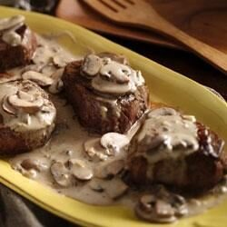

Beef Tenderloins with Mushroom-Garlic Sauce

Description
Enjoy these hearty beef tenderloin steaks with creamy portabella mushroom cooking sauce--perfect for dinner.
Ingredients
- 3 tablespoons butter
- 4 (7 ounce) beef tenderloin steaks (1 1/2 inches thick)
- 2 cups sliced baby portabella mushrooms
- 4 cloves garlic, finely chopped
- 2 tablespoons dry white wine or beef broth
- 1 (9 ounce) pouch creamy portabella mushroom cooking sauce
Steps
- In 10-inch skillet, melt 1 tablespoon of the butter over medium-high heat.
Sprinkle steaks with 1/2 teaspoon salt and 1/4 teaspoon pepper. Cook steaks 4 to 6 minutes,
turning once, until deep brown. Reduce heat to low. Cover; cook 6 to 8 minutes for medium-rare
to medium doneness (don't overcook; beef will continue to cook while standing). Remove beef to platter;
cover to keep warm.
- Increase heat to medium. Add remaining 2 tablespoons butter to skillet. Add mushrooms.
Cook 3 to 4 minutes, stirring once or twice and scraping up any browned bits, until tender.
Add wine and cooking sauce; heat to boiling. Reduce heat; simmer 3 to 5 minutes, stirring occasionally,
until sauce is hot.
- Serve mushroom sauce over steaks.
Back to the index